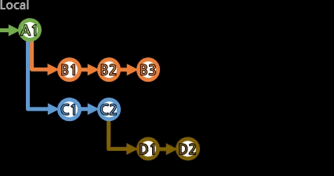
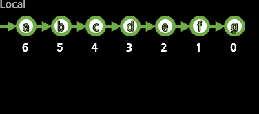

[rebase]

커밋과 브랜치들을 수정하는 여러 방법을 본다.
번외로, 현재 로컬 HEAD가 가리키는 현재의 커밋을 즉각 수정하려면,
git commit --amend로, --amend 옵션을 줘서 커밋을 실행하면
가장 최근의 커밋 내용을 유지하면서, 커밋을 교체한다.
(커밋ID가 완전히 달라지는, 삭제 후 재생성이다)
원하면 --author="작성자명 email@address.com" 등의 옵션을 줘서 작성자 명을 수정하거나, 코멘트를 수정할 수 있고,
커밋 내용에 추가하고 싶은 사항이 있다면, git add 파일경로로 Stage시킨 후, git commit --amend를 하면
커밋 내용이 합쳐져서 재생성된다.
수정의 영역이라 [commit]보다는 여기에서 짤막하게 이야기한다.
옵션이 없는 git rebase는, 특정 커밋 구간을 옮겨다 붙일 수 있는데,
우선 이 기능보다, git rebase -i(--interactive)로 옵션을 준 작업부터 살펴보자.
(이 옵션을 붙인 작업이 상대적으로 더 흔하게 일어난다)
> git rebase -i(--interactive) 수정_직전_커밋
작업 중인 브랜치에서, 특정 커밋 다음부터의 커밋들이 시간 순으로 위에서 아래로 나열된다.
(맨 위가 가장 예전, 맨 아래가 가장 최신)
기본으로 pick 커밋으로 되어있는 것을 수정하거나, 새 줄을 추가한다.
ㆍpick 커밋: 그대로 둔다.
ㆍreword 커밋: 코멘트만 수정(그래도 커밋 재생성).
ㆍedit 커밋: 커밋을 수정(재생성).
(차례가 되면, 수정(git add) 후 git commit --amend로 수정 완료하고, git rebase --continue로 다음으로 계속 한다.)
(수정된 내용이 이후 커밋에 충돌(conflict)을 일으키면,
해당 커밋이 pick이더라도 충돌 해결을 요구(git add,git rebase --continue)하고 재생성한다.)
ㆍsquash 커밋: 직전 커밋에 병합된다. 작업 내용도, 코멘트도 합쳐진다.
ㆍfixup 커밋: squash와 같으나, 코멘트는 버린다.
ㆍexec 쉘커맨드: exec 쉘커맨드 형식의 줄을 끼워넣으면, rebase의 해당 순서에 쉘커맨드가 실행된다.
ㆍbreak: 여기서 잠시 멈춘다. git rebase --continue로 다음으로 계속한다.
ㆍdrop 커밋: 해당 커밋은 버린다.
이 명령어만으로 여러 방법으로 브랜치의 흐름에 해당하는 커밋을 재생성하여 교체시킬 수 있다.
[개념]에서 봤듯이 커밋은 브랜치에 종속적이지 않으므로,

대상 커밋을 다른 브랜치에서도 사용하고 있다면,
기존 커밋은 그 브랜치에서는 원래대로 사용되고 있을 것이며,
(새 커밋은 분기(diverged)처럼 위치함)
대상 커밋이 다른 브랜치에서는 사용되지 않으면,
기존 커밋은 제거된다.
이 작업들은 브랜치의 커밋들을 재생성하여 교체시키므로,
이미 리모트에 push된 커밋들이라면 git push -f(--force)로 덮어씌울 것이며,
다른 사람들에게 수정사항을 전파하면서까지 할 작업이 맞는지 충분히 고려한다.
이제 -i(--interactive)옵션 없는 git rebase를 살펴보자.
특정 커밋 구간을 떼어다 원하는 브랜치에 붙일 수 있다.(커밋들을 재생성하여 붙인다)
(당연히 일부를 다른 브랜치에서도 사용하고 있다면, 떼어지진 않고 복사된다.)
붙여지는 커밋들은 원본과 같은 내용으로 재생성되려 하지만,
붙여질 곳의 흐름과 충돌(conflict)이 존재한다면, 내용도 수정되어야 한다.
심지어 흐름 중에 중복된 내용이 이미 존재해서 필요 없어지면, 커밋이 사라지기도 한다.
> git rebase 붙여질_브랜치 [옮길_브랜치]
(옮길_브랜치를 지정하면 해당 브랜치로 checkout한 후 작업이 이뤄지고,
아니면 현재 작업 중인 브랜치에서 작업이 이뤄진다.)
충돌(conflict)이 있어 수정이 이뤄져야 하면,
git add로 수정 후, git rebase --continue로 완료하여 다음으로 진행한다.

D 브랜치(갈색)을 B 브랜치(주황색)에 붙인다고 했을 때,
두 브랜치가 공통인 부분은 A1 커밋이라, A1 커밋 이후의 모든 커밋을 옮겨붙이게 된다.
(물론 커밋들은 모두 재생성되며, 다른 브랜치에서 사용 중인 커밋은 옮겨지진 않는다.)
즉, D 브랜치의 분기가 시작되었던 부분부터 옮기는 것이 아니라,
공통된 흐름 이후 부터의 모든 커밋을 옮기려고 한다.
만약 중간에 제외하고 싶은 구간이 있다면, 역시 지정해야 한다.
> git rebase --onto 붙여질_브랜치 제외될_브랜치 [옮길_브랜치]
지정된 제외될_브랜치 스스로를 포함하여, 그 상단으로 모두 대상에서 제외시킨다.
> git rebase --onto 붙여질_브랜치 제외될_커밋 [옮길_브랜치]
처럼 제외될_커밋으로 지정하여, 스스로를 포함하여 그 이전 모두를 대상에서 제외시킬 수도 있다.

한 브랜치 내에서의 흐름도 조절할 수 있다.
> git rebase --onto 붙을_커밋(영향없음) 제외될_커밋(자신도) [작업할_브랜치]
위의 이미지를 예로 들면, git rebase --onto branchA~5 branchA~3이 될 것이다.
이 작업은 git rebase -i(--interactive) branchA~5에서, 삭제할 커밋을 drop시켜도 같은 결과를 얻을 수 있다.